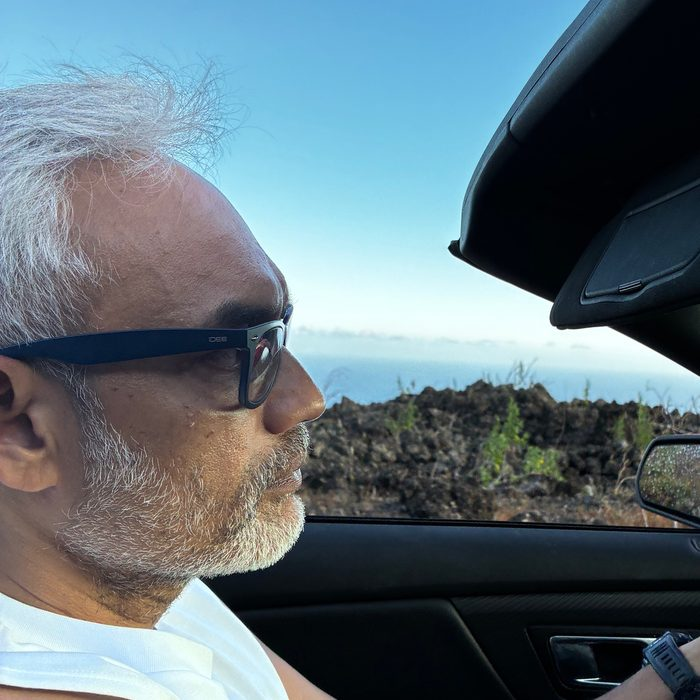

Find your point of balance.
Every organisation is being pulled by AI and by how it wants to be seen. We help you find the point where the two hold steady: AI that fits how you actually work, and a brand that stays true to who you are.
About
We help organisations adopt AI and evolve their brand without losing what makes them distinctive, grounded in a specific read of where AI belongs in their work.
AI-enabled workflow transformation
A practical look at how work actually gets done, where AI genuinely helps and where it does not. The outcome is a clear roadmap and working processes your own team can run, on tools they can operate.
Brand identity and evolution
How you are known should keep pace with who you are becoming. This covers positioning, identity and how the brand shows up, so it reflects where the organisation is heading and still feels unmistakably yours.

Abhi
I started out writing software and have spent most of my career since running technology and publishing services businesses. Along the way I have seen technology change how work gets done, sometimes well and often not.
The change worth making is rarely the obvious one. In my experience, it comes from understanding how a team works and what an organisation stands for. That is what I set out to do here.
I still build things myself, and I work with some of the best brand consultants and agencies I know to bring ideas to life.
When I am not working, you will find me reading (absolutely anything under the sun), working out, planning our next family holiday (oh yes, I plan years in advance), or just spending time with my family.
Based in Chennai, working with clients globally.
abhi@pointofbalance.in